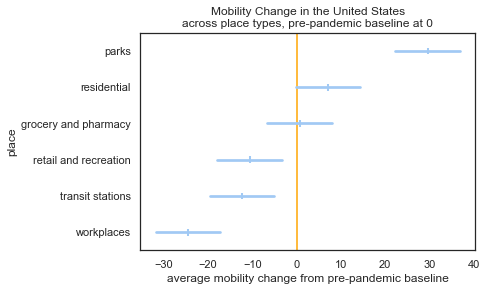
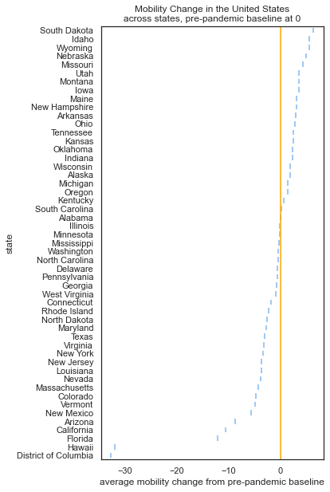

import pandas as pd, plotly.express as px, statsmodels.api as sm, matplotlib.pyplot as plt, seaborn as sns
import warnings
warnings.filterwarnings('ignore')Modeling Google Mobility Data due to COVID-19 in 2020
This tutorial is based on the version in R by Adriana Picoral, which you can find here.
For this case study we will be using Google’s data on COVID-19 Community Mobility. You can both download and access more details about this data at the previous link. In this tutorial, we will focus on data from the United States in 2020. The website also includes data from 2019 and 2021.
First, let’s import the packages we need. We’ll also silence warnings, as the warnings for these plots are extensive given the amount of data and color palettes we’re using. In order to use this tutorial you will need to make sure all of these packages are installed - if you have the Anaconda version of Python, you will specifically need to install seaborn and plotly.
Dealing with data
First, we can import the csv for the data we’re interested in from the regional Google Mobility data zip file. The one used here is the 2020 US Region report. Once we’ve read in the data, we can take a look at it to get a better feel for the variables and data formats we have at our disposal.
us_mobil_2020 = pd.read_csv('data/2020_US_Region_Mobility_Report.csv')us_mobil_2020.head()| country_region_code | country_region | sub_region_1 | sub_region_2 | metro_area | iso_3166_2_code | census_fips_code | place_id | date | retail_and_recreation_percent_change_from_baseline | grocery_and_pharmacy_percent_change_from_baseline | parks_percent_change_from_baseline | transit_stations_percent_change_from_baseline | workplaces_percent_change_from_baseline | residential_percent_change_from_baseline | |
|---|---|---|---|---|---|---|---|---|---|---|---|---|---|---|---|
| 0 | US | United States | NaN | NaN | NaN | NaN | NaN | ChIJCzYy5IS16lQRQrfeQ5K5Oxw | 2020-02-15 | 6.0 | 2.0 | 15.0 | 3.0 | 2.0 | -1.0 |
| 1 | US | United States | NaN | NaN | NaN | NaN | NaN | ChIJCzYy5IS16lQRQrfeQ5K5Oxw | 2020-02-16 | 7.0 | 1.0 | 16.0 | 2.0 | 0.0 | -1.0 |
| 2 | US | United States | NaN | NaN | NaN | NaN | NaN | ChIJCzYy5IS16lQRQrfeQ5K5Oxw | 2020-02-17 | 6.0 | 0.0 | 28.0 | -9.0 | -24.0 | 5.0 |
| 3 | US | United States | NaN | NaN | NaN | NaN | NaN | ChIJCzYy5IS16lQRQrfeQ5K5Oxw | 2020-02-18 | 0.0 | -1.0 | 6.0 | 1.0 | 0.0 | 1.0 |
| 4 | US | United States | NaN | NaN | NaN | NaN | NaN | ChIJCzYy5IS16lQRQrfeQ5K5Oxw | 2020-02-19 | 2.0 | 0.0 | 8.0 | 1.0 | 1.0 | 0.0 |
After taking a look at the dataframe above, we notice there’s a lot of region information at different levels of granularity. For this analysis, we’ll use sub_region_1 because we’re going to complete our analysis at the state regional level. Additionally, we’ll want to extract the place mobility information that allows us to assess change from baseline - for example, retail_and_recreation_percent_change_from_baseline (what a (descriptive) mouthful).
region_placeID = us_mobil_2020.loc[:,["sub_region_1","place_id"]].copy()
changes = us_mobil_2020.loc[:,"retail_and_recreation_percent_change_from_baseline":"residential_percent_change_from_baseline"].copy()
mobil_sub = pd.concat((region_placeID, changes), axis = 1)
mobil_sub.head()| sub_region_1 | place_id | retail_and_recreation_percent_change_from_baseline | grocery_and_pharmacy_percent_change_from_baseline | parks_percent_change_from_baseline | transit_stations_percent_change_from_baseline | workplaces_percent_change_from_baseline | residential_percent_change_from_baseline | |
|---|---|---|---|---|---|---|---|---|
| 0 | NaN | ChIJCzYy5IS16lQRQrfeQ5K5Oxw | 6.0 | 2.0 | 15.0 | 3.0 | 2.0 | -1.0 |
| 1 | NaN | ChIJCzYy5IS16lQRQrfeQ5K5Oxw | 7.0 | 1.0 | 16.0 | 2.0 | 0.0 | -1.0 |
| 2 | NaN | ChIJCzYy5IS16lQRQrfeQ5K5Oxw | 6.0 | 0.0 | 28.0 | -9.0 | -24.0 | 5.0 |
| 3 | NaN | ChIJCzYy5IS16lQRQrfeQ5K5Oxw | 0.0 | -1.0 | 6.0 | 1.0 | 0.0 | 1.0 |
| 4 | NaN | ChIJCzYy5IS16lQRQrfeQ5K5Oxw | 2.0 | 0.0 | 8.0 | 1.0 | 1.0 | 0.0 |
Once we’ve extracted the variables we’re interested in from the raw data, we can start to preprocess the data. First, we’ll remove the _percent_change_from_baseline suffix from any variables that contain it, and then we’ll use pandas.melt to “melt” our dataframe from wide to long format (place will become a new column, along with percent_change_from_baseline).
mobil_sub.columns = [col_name.replace("_percent_change_from_baseline", "") for col_name in mobil_sub.columns]
mobil_sub| sub_region_1 | place_id | retail_and_recreation | grocery_and_pharmacy | parks | transit_stations | workplaces | residential | |
|---|---|---|---|---|---|---|---|---|
| 0 | NaN | ChIJCzYy5IS16lQRQrfeQ5K5Oxw | 6.0 | 2.0 | 15.0 | 3.0 | 2.0 | -1.0 |
| 1 | NaN | ChIJCzYy5IS16lQRQrfeQ5K5Oxw | 7.0 | 1.0 | 16.0 | 2.0 | 0.0 | -1.0 |
| 2 | NaN | ChIJCzYy5IS16lQRQrfeQ5K5Oxw | 6.0 | 0.0 | 28.0 | -9.0 | -24.0 | 5.0 |
| 3 | NaN | ChIJCzYy5IS16lQRQrfeQ5K5Oxw | 0.0 | -1.0 | 6.0 | 1.0 | 0.0 | 1.0 |
| 4 | NaN | ChIJCzYy5IS16lQRQrfeQ5K5Oxw | 2.0 | 0.0 | 8.0 | 1.0 | 1.0 | 0.0 |
| ... | ... | ... | ... | ... | ... | ... | ... | ... |
| 812060 | Wyoming | ChIJd4Rqhed3YocR7ubT5-HgoJg | NaN | NaN | NaN | NaN | -56.0 | NaN |
| 812061 | Wyoming | ChIJd4Rqhed3YocR7ubT5-HgoJg | NaN | NaN | NaN | NaN | -40.0 | NaN |
| 812062 | Wyoming | ChIJd4Rqhed3YocR7ubT5-HgoJg | NaN | NaN | NaN | NaN | -43.0 | NaN |
| 812063 | Wyoming | ChIJd4Rqhed3YocR7ubT5-HgoJg | NaN | NaN | NaN | NaN | -40.0 | NaN |
| 812064 | Wyoming | ChIJd4Rqhed3YocR7ubT5-HgoJg | NaN | NaN | NaN | NaN | -38.0 | NaN |
812065 rows × 8 columns
mobil_2020_tidy = pd.melt(mobil_sub,
id_vars = ["sub_region_1", "place_id"],
var_name = "place",
value_name = "percent_change_from_baseline")
mobil_2020_tidy| sub_region_1 | place_id | place | percent_change_from_baseline | |
|---|---|---|---|---|
| 0 | NaN | ChIJCzYy5IS16lQRQrfeQ5K5Oxw | retail_and_recreation | 6.0 |
| 1 | NaN | ChIJCzYy5IS16lQRQrfeQ5K5Oxw | retail_and_recreation | 7.0 |
| 2 | NaN | ChIJCzYy5IS16lQRQrfeQ5K5Oxw | retail_and_recreation | 6.0 |
| 3 | NaN | ChIJCzYy5IS16lQRQrfeQ5K5Oxw | retail_and_recreation | 0.0 |
| 4 | NaN | ChIJCzYy5IS16lQRQrfeQ5K5Oxw | retail_and_recreation | 2.0 |
| ... | ... | ... | ... | ... |
| 4872385 | Wyoming | ChIJd4Rqhed3YocR7ubT5-HgoJg | residential | NaN |
| 4872386 | Wyoming | ChIJd4Rqhed3YocR7ubT5-HgoJg | residential | NaN |
| 4872387 | Wyoming | ChIJd4Rqhed3YocR7ubT5-HgoJg | residential | NaN |
| 4872388 | Wyoming | ChIJd4Rqhed3YocR7ubT5-HgoJg | residential | NaN |
| 4872389 | Wyoming | ChIJd4Rqhed3YocR7ubT5-HgoJg | residential | NaN |
4872390 rows × 4 columns
Model and Visualize the effect of State and Place on Mobility
We can use statsmodels.OLS.from_formula to predict percent mobility change (percent_change_from_baseline) as a function of (~) state (sub_region_1) and place. Notice how many rows we have in our data - almost 5 million! It might take 30 seconds or so (don’t be alarmed).
formula = "percent_change_from_baseline ~ sub_region_1 + place"
model = sm.OLS.from_formula(formula = formula,
data = mobil_2020_tidy)
results = model.fit()After that, we can get the model predictions and the summary dataframe before we begin to aggregate the results by state and place.
predict_results = results.get_prediction()
result_frame = predict_results.summary_frame()
print(result_frame) mean mean_se mean_ci_lower mean_ci_upper obs_ci_lower \
321 -8.964392 0.093604 -9.147852 -8.780933 -53.930294
322 -8.964392 0.093604 -9.147852 -8.780933 -53.930294
323 -8.964392 0.093604 -9.147852 -8.780933 -53.930294
324 -8.964392 0.093604 -9.147852 -8.780933 -53.930294
325 -8.964392 0.093604 -9.147852 -8.780933 -53.930294
... ... ... ... ... ...
4871954 14.217973 0.175799 13.873412 14.562533 -30.748875
4871957 14.217973 0.175799 13.873412 14.562533 -30.748875
4871958 14.217973 0.175799 13.873412 14.562533 -30.748875
4871959 14.217973 0.175799 13.873412 14.562533 -30.748875
4871960 14.217973 0.175799 13.873412 14.562533 -30.748875
obs_ci_upper
321 36.001509
322 36.001509
323 36.001509
324 36.001509
325 36.001509
... ...
4871954 59.184820
4871957 59.184820
4871958 59.184820
4871959 59.184820
4871960 59.184820
[2754604 rows x 6 columns]As we can see above, the summarized predictions no longer contain state or place information, so in order to make our lives easier (and know what each of the result observations refers to), we can add those variables back into the dataframe.
result_frame.insert(0, "state", mobil_2020_tidy["sub_region_1"].copy())
result_frame.insert(1, "place", mobil_2020_tidy["place"].copy())result_frame| state | place | mean | mean_se | mean_ci_lower | mean_ci_upper | obs_ci_lower | obs_ci_upper | |
|---|---|---|---|---|---|---|---|---|
| 321 | Alabama | retail_and_recreation | -8.964392 | 0.093604 | -9.147852 | -8.780933 | -53.930294 | 36.001509 |
| 322 | Alabama | retail_and_recreation | -8.964392 | 0.093604 | -9.147852 | -8.780933 | -53.930294 | 36.001509 |
| 323 | Alabama | retail_and_recreation | -8.964392 | 0.093604 | -9.147852 | -8.780933 | -53.930294 | 36.001509 |
| 324 | Alabama | retail_and_recreation | -8.964392 | 0.093604 | -9.147852 | -8.780933 | -53.930294 | 36.001509 |
| 325 | Alabama | retail_and_recreation | -8.964392 | 0.093604 | -9.147852 | -8.780933 | -53.930294 | 36.001509 |
| ... | ... | ... | ... | ... | ... | ... | ... | ... |
| 4871954 | Wyoming | residential | 14.217973 | 0.175799 | 13.873412 | 14.562533 | -30.748875 | 59.184820 |
| 4871957 | Wyoming | residential | 14.217973 | 0.175799 | 13.873412 | 14.562533 | -30.748875 | 59.184820 |
| 4871958 | Wyoming | residential | 14.217973 | 0.175799 | 13.873412 | 14.562533 | -30.748875 | 59.184820 |
| 4871959 | Wyoming | residential | 14.217973 | 0.175799 | 13.873412 | 14.562533 | -30.748875 | 59.184820 |
| 4871960 | Wyoming | residential | 14.217973 | 0.175799 | 13.873412 | 14.562533 | -30.748875 | 59.184820 |
2754604 rows × 8 columns
There are a few things we can notice about the rows of this dataframe - there appear to be a significant number of repeats in the data for each place within each state. Therefore, we can group our dataframe by state, then place and aggregate using the mean. Finally, we can also update the place names so they no longer have underscores in place of spaces, to prepare for visualizing our results.
result_frame.dropna(subset = "state", inplace = True)
result_frame = result_frame.groupby(['state', 'place']).mean()
result_frame.reset_index(level = ["state", "place"], inplace = True)
result_frame['place'] = [place.replace("_", " ") for place in result_frame['place']]
result_frame| state | place | mean | mean_se | mean_ci_lower | mean_ci_upper | obs_ci_lower | obs_ci_upper | |
|---|---|---|---|---|---|---|---|---|
| 0 | Alabama | grocery and pharmacy | 2.325717 | 0.093900 | 2.141676 | 2.509757 | -42.640187 | 47.291621 |
| 1 | Alabama | parks | 31.213234 | 0.103137 | 31.011089 | 31.415378 | -13.752748 | 76.179216 |
| 2 | Alabama | residential | 8.695328 | 0.094897 | 8.509332 | 8.881324 | -36.270584 | 53.661240 |
| 3 | Alabama | retail and recreation | -8.964392 | 0.093604 | -9.147852 | -8.780933 | -53.930294 | 36.001509 |
| 4 | Alabama | transit stations | -10.726891 | 0.097719 | -10.918417 | -10.535366 | -55.692827 | 34.239044 |
| ... | ... | ... | ... | ... | ... | ... | ... | ... |
| 301 | Wyoming | parks | 36.735878 | 0.180231 | 36.382632 | 37.089125 | -8.231037 | 81.702793 |
| 302 | Wyoming | residential | 14.217973 | 0.175799 | 13.873412 | 14.562533 | -30.748875 | 59.184820 |
| 303 | Wyoming | retail and recreation | -3.441748 | 0.174893 | -3.784532 | -3.098963 | -48.408582 | 41.525086 |
| 304 | Wyoming | transit stations | -5.204247 | 0.176662 | -5.550498 | -4.857996 | -50.171107 | 39.762613 |
| 305 | Wyoming | workplaces | -17.396084 | 0.173927 | -17.736975 | -17.055194 | -62.362904 | 27.570735 |
306 rows × 8 columns
We can run an ANOVA test, in case reporting on significance of findings is necessary. ANOVA is a hypothesis test that is used to determine if the relationships between our features/factors (the independent variables - state and place) and the dependent variable (percent mobility change) are significant. See the above link for more information. We will use statsmodels.stats.anova_lm.
sm.stats.anova_lm(results, typ = "II")| sum_sq | df | F | PR(>F) | |
|---|---|---|---|---|
| sub_region_1 | 5.387358e+07 | 50.0 | 2047.118540 | 0.0 |
| place | 6.169537e+08 | 5.0 | 234433.531397 | 0.0 |
| Residual | 1.449817e+09 | 2754548.0 | NaN | NaN |
Visualize the effect of Place on Mobility
After fitting our model and hypothesis testing, we can visualize our results.
First, we’ll visualize the effect of place on mean percent mobility change. To do this, we’ll create a seaborn.pointplot. The points in the point plot will be based on the aggregated mean across each distinct place and the error bars are the standard deviation of those estimates.
sns.set_theme(style="white")
sns.set_palette('pastel', n_colors = len(result_frame))
result_frame.sort_values(by = "mean", ascending = False, inplace = True)
# create plot
# set figure size and set padding around subplots to "tight"
# (to make sure labs are included)
# plt.figure(figsize=[6, 5])
plt.tight_layout()
# add vertical line at 0 (baseline)
plt.axvline(x = 0, color = "orange")
# add place errorbars
ax = sns.pointplot(y = "place",
x= "mean",
orient = "h",
ci = 'sd',
data = result_frame,
join = False,
markers = "|")
# set axis labels
ax.set(title = "Mobility Change in the United States\nacross place types, pre-pandemic baseline at 0",
xlabel = "average mobility change from pre-pandemic baseline")[Text(0.5, 1.0, 'Mobility Change in the United States\nacross place types, pre-pandemic baseline at 0'),
Text(0.5, 0, 'average mobility change from pre-pandemic baseline')]
In the plot above, we can see that the average mobility change by place was greatest in parks - which saw increased mobility during 2020 compared to the pre-pandemic baseline (0). By contrast, workplaces had the greatest decrease in mobility, dropping by somewhere around 25%.
Visualize the effect of State on Mobility
We can also use plotly to visualize the effect of state on average mobility change. First we have to re-group the data so that it’s grouped by state only, to prepare for the visualization. Plotly will give us the tools we need to create an interactive chloropleth map, which is pretty cool! Plotly is backed by JavaScript, which lends its dynamic functionality (and it’s available in multiple languages, too!).
ave_mobil_by_state = result_frame.groupby(['state']).mean()
ave_mobil_by_state.reset_index(level = ["state"], inplace = True)
# read state codes to create chloropleth
state_codes_df = pd.read_csv('https://raw.githubusercontent.com/jackparmer/iso-3166-state-codes/master/codes.csv')
# state_codes_df.to_csv("data/state_codes.csv")
state_codes_df['state'] = [state_code.strip() for state_code in state_codes_df['state']]
# create map
fig = px.choropleth(ave_mobil_by_state,
locations = [state_codes_df.loc[state_codes_df['state'].eq(state).idxmax(), "code"]
for state in ave_mobil_by_state.state],
locationmode="USA-states",
color='mean',
color_continuous_scale="Earth",
# color_continuous_midpoint = 0,
range_color = [-30, 10],
scope="usa",
labels={'locations':'state','mean':'avg. change (%)'},
title = "Mobility Change in the United States, across states",
width = 630,
height = 450)
fig.show()Unable to display output for mime type(s): application/vnd.plotly.v1+json
The chloropleth map is really beautiful, with nice colors, but in static (meaning, non-interactive/unchanging) versions, chloropleth maps aren’t necessarily the best way to understand the distinctions between states - we aren’t actually visualizing their exact differences, since we can’t see the values unless we interact with this plot. Therefore, we can make another pointplot to visualize the differences in percent mobility change by state:
ave_mobil_by_state.sort_values(by = "mean", ascending = False, inplace = True)
sns.set_theme(style="white")
sns.set_palette('pastel')
# create plot
# set figure size and set padding around subplots to "tight"
# (to make sure labs are included)
plt.figure(figsize=[5, 10])
plt.tight_layout()
# add vertical line at 0 (baseline)
plt.axvline(x = 0, color = "orange")
# add place errorbars
ax = sns.pointplot(y = "state",
x= "mean",
orient = "h",
data = ave_mobil_by_state,
join = False,
markers = "|")
# set axis labels
ax.set(title = "Mobility Change in the United States\nacross states, pre-pandemic baseline at 0",
xlabel = "average mobility change from pre-pandemic baseline")[Text(0.5, 1.0, 'Mobility Change in the United States\nacross states, pre-pandemic baseline at 0'),
Text(0.5, 0, 'average mobility change from pre-pandemic baseline')]
Which of these two plots that display mobility change by state would you use? Why? Could there be benefit to using each of them in different scenarios?